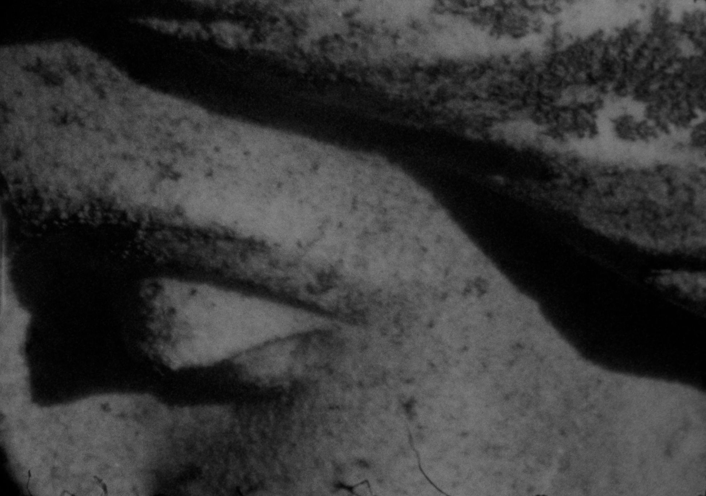

LIKE BLOOD FROM A STONE

2025 | BW Super 8 | 7'18"
preview here
Perhaps what we perceive as everlasting harbors its own expiration, rotting in ways that transcend human understanding. Just as a static painting can mutate and stretch into a film, Like Blood From a Stone suggests that death and decay may not signify an ending, but rather a shift from one state of matter to another.
In part a (re)enactment and extension of The Wounded Angel (1903), a painting by artist Hugo Simberg, Like Blood From a Stone charts the procession of a wounded angel, carried up Mont Royal by two pallbearers. Spliced together with imagery of stone statues—flesh, tears, angel wings—in varying states of deterioration, the film invites viewers to ponder questions of (im)mortality and undoing.
Like a stone mason, light carves the B&W Super8 film, and the processing leaves behind tactile and jittery textural hauntings. The celestial score by Alex Potter sets a mood of bitter-sweet transformation, interrupted by the angelic timelessness of Bach’s Cantata #140, a sonic world that heralds mourning laced with the joy of change.